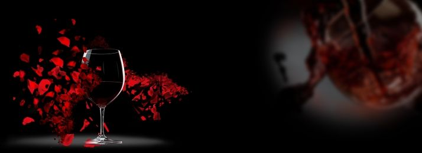
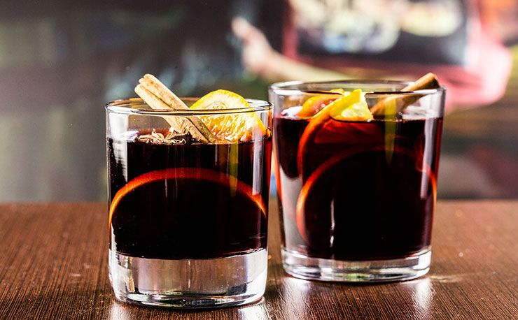
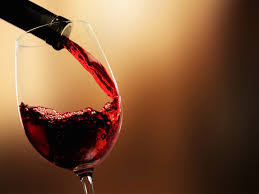

|  | banner02||||
| HOME | PRODUCTS | GALLERY | ABOUT US | CONTACT |
|
The first reason is the most obvious. Wine Text is making it possible to buy wines at a price that is massively discounted from the release price. They get this pricing by working extremely close with importers, distributors, and winemakers that want to get their wines in the hands of as many people as possible. Second is the convenience. It can be very difficult to find high quality wines at great prices. Wine Text makes it as easy as possible to get the important information in your hands while also making it extremely easy to order. The WINE last benefit is learning about wine! The #1 reaction by customers of Wine Text is how many new styles of wines they are tasting these days. People are constantly learning more about their palate and what they enjoy. On top of that, Wine Text offers a lot of collectibles at reasonable prices. Many people who have never planned on saving wines are now buying collectibles to save for special occasions. Wine Text is not only changing the way people buy wine, but it is changing the way people drink wine as well! How does it work? Wine Text is the hardest part, and even that only takes 3 minutes. After you are signed up, you will receive a wine offer every day through SMS. A photo of the wine, a short description, a link to an Instagram Video, and price will all be included in the text.c WineText must be notified within 30 days from the date of delivery. If you suspect the bottle is bad, simply put the cork back in the bottle and leave the wine in as well; we cannot take back any empty bottles. Please call our Order Department at WineText must be notified within 30 days from the date of delivery. If you suspect the bottle is bad, simply put the cork back in the bottle and leave the wine in as well; we cannot take back any empty bottles. Please call our Order Department... Always present the bottle on the right of the person who ordered the wine. The bottle should not be open at this stage. Make sure the label is facing the host and repeat the year, the winery and the type of wine to verify it is the correct one. Await approval before opening. |
||||
OUR MOST USED WINE  |
||||
CREATED BY MR.VISHAL BHUTKAR |
||||